(Blender es un programa informático multiplataforma, dedicado especialmente al modelado, iluminación, renderizado, la animación y creación de gráficos tridimensionales.)
Tras abrir Blender, vemos que hay un cubo ya creado, sin emnbargo para este ejemplo, lo borraremos con la tecla X y añadiremos la cabeza de un mono con el atajo Shift+A.
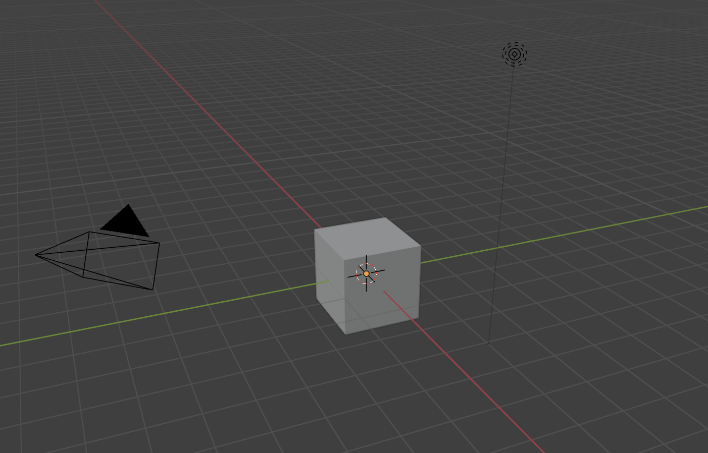
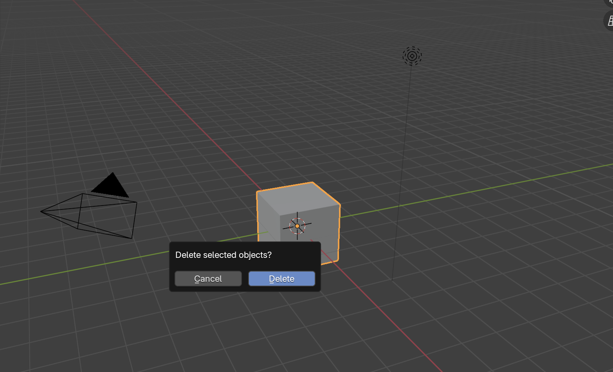
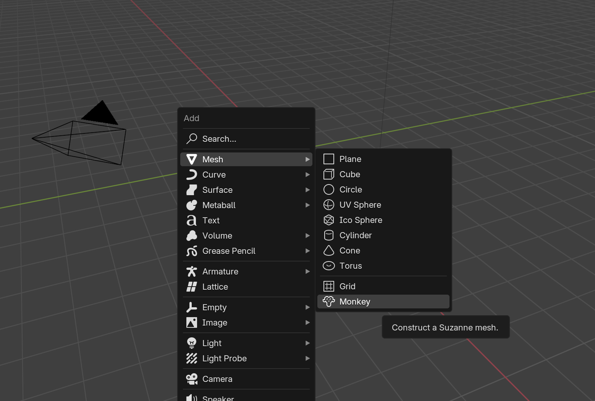
Al crear el mono, vamos al panel derecho y seleccionamos el icono de herramienta
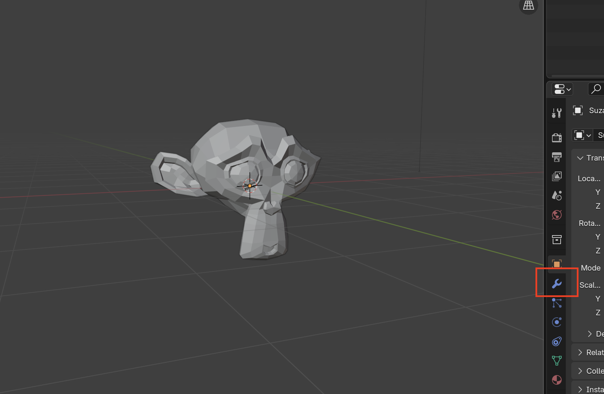
Se nos abrirá una boton para añadir un modificador y en él, se desplegará un abanico de opicones aunque para para ser mas preciosos, buscaremos en la lupita la palabra "Subdivision Surface".
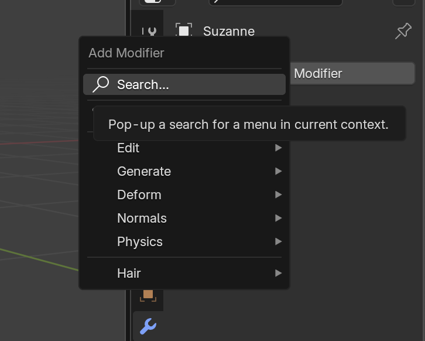
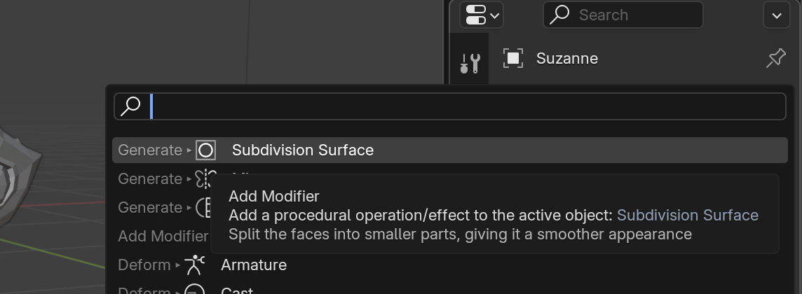
Se nos aplicara este modificador al monito y ya es depende de cada que cantidad de niveles
quieres poner. A tener en cuanta que cuantos más, más vectores tendrá el modelo.
Al tener las medidas claras, lo aplicaremos.
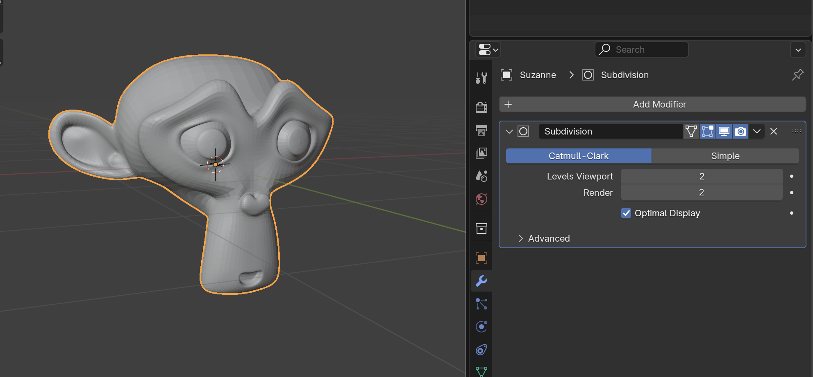
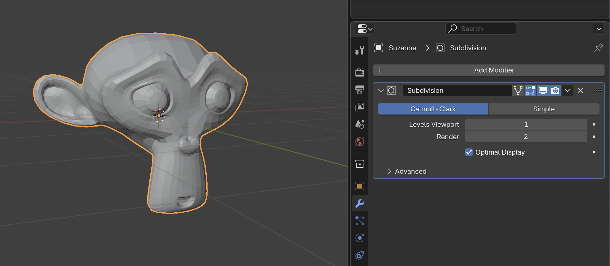
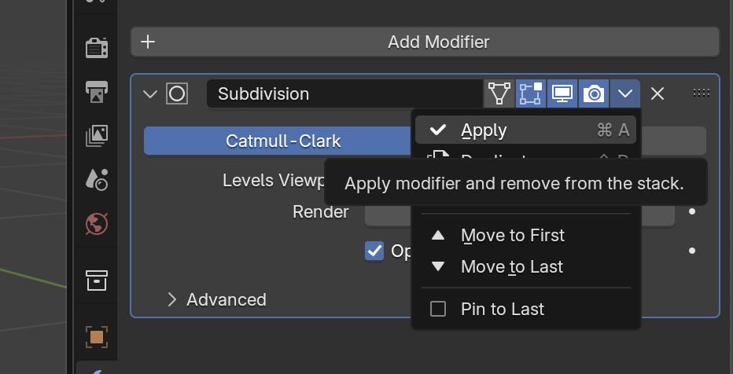
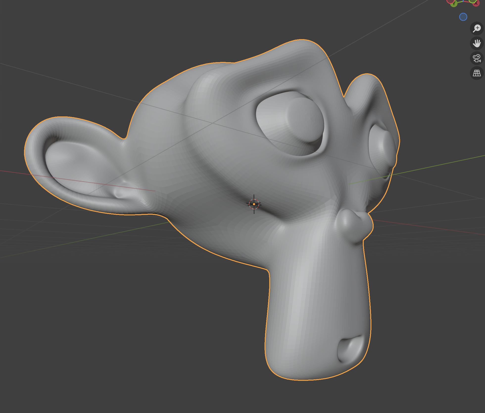
Podemos observar que el modelo queda mucho mas liso, no obstante, se puede terminar de perfeccionar
clicando el boton derecho del raton, la opcion Shade Smooth(sombra suave).
Finalmente yatendriamos nuestro monito con una piel perfecta:).
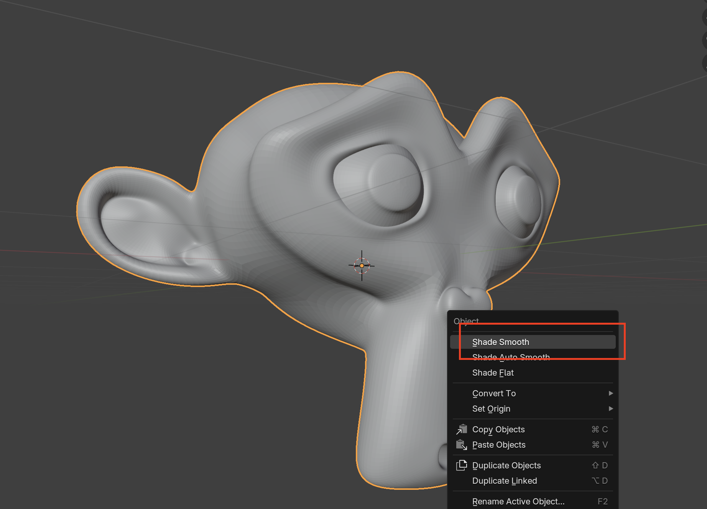
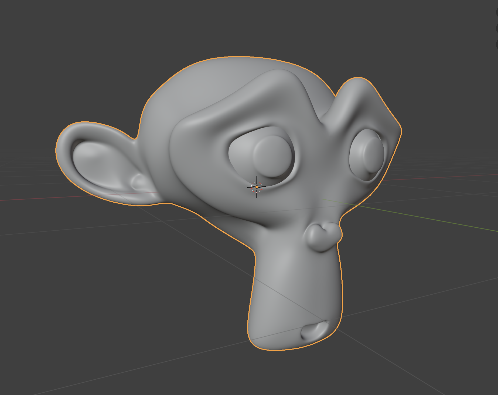